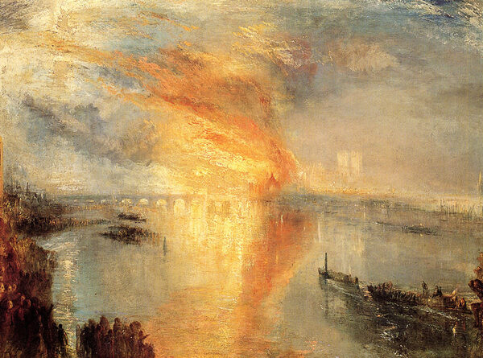

William Turner,1775 - 1851,Romanticism,British,"Joseph Mallord William Turner (23 April 1775 – 19 December 1851), known as J. M. W. Turner and contemporarily as William Turner, was an English Romantic painter, printmaker and watercolourist. He is known for his expressive colourisations, imaginative landscapes and turbulent, often violent marine paintings.",https://en.wikipedia.org/wiki/J._M._W._Turner,66
